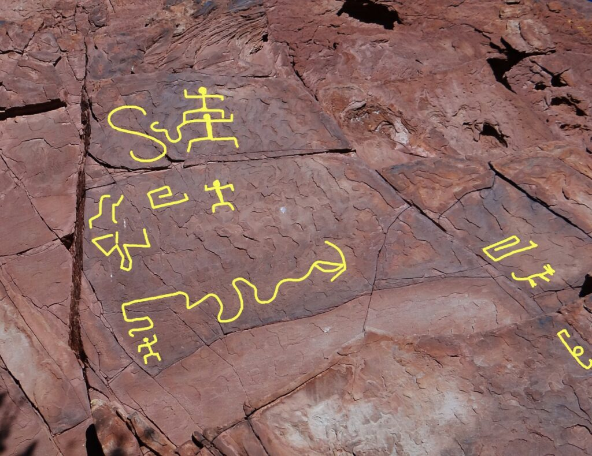
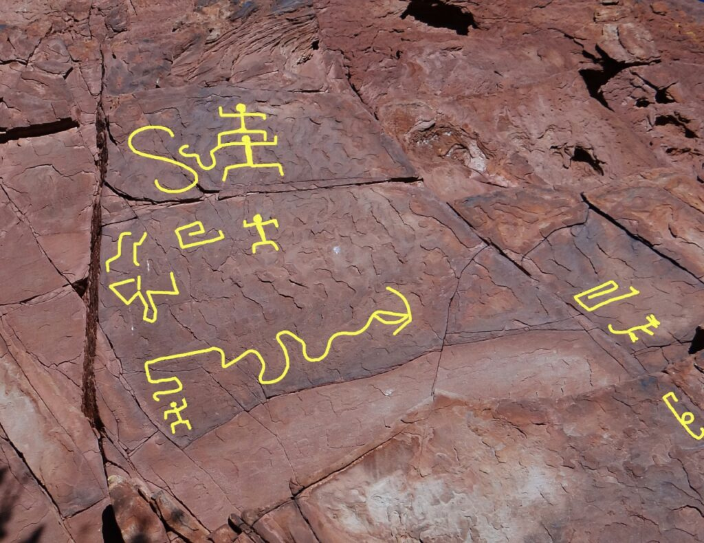

7 DE NOVIEMBRE: BATALLA DE SUIPACHA, LA PRIMERA VICTORIA DE LA PATRIA
En la batalla de Suipacha se enfrentaron las fuerzas del Ejército del Norte y las fuerzas realistas españolas, durante la primera expedición auxiliadora al Alto Perú.
Luego del desfavorable combate de Cotagaita del 27 de octubre, las fuerzas revolucionarias se vieron obligadas a retirarse hacia Tupiza. El 5 de noviembre, las fuerzas realistas, al mando de José de Córdova, comenzaron la marcha hacia el mismo lugar, después de recibir a Vicente Nieto con 200 veteranos de Chuquisaca.
Por su parte, Antonio González Balcarce desalojó ese pueblo que fue ocupado al día siguiente por 1.200 realistas, y el 6 de noviembre, se situó en Nazareno, ubicado sobre el río Suipacha. Allí recibió un refuerzo de 200 hombres de Jujuy, con dos piezas de artillería, municiones y la paga de las tropas.
José de Córdova había recibido informes falsos sobre la moral combativa de las fuerzas de González Balcarce, y se había convencido de que marchaban descontentos y mal armados; no se había enterado de la llegada de refuerzos con municiones y cañones.
LA BATALLA
La batalla se produjo a 25 km de Tupiza, a orillas del río Suipacha, en la provincia Sud Chichas del Departamento de Potosí (actual Bolivia).
El Ejército del Norte tenía inferioridad numérica; eran 800 realistas con 4 cañones contra 600 patriotas con 2 cañones. El 7 de noviembre, la vanguardia realista tomó contacto visual con las tropas de Balcarce, que había ocultado gran parte de su infantería y artillería entre los cerros y quebradas. Estuvieron frente a frente un largo tiempo. González Balcarce se impacientó y adelantó 200 hombres con dos cañones, para provocar la lucha. El enemigo adelantó algunas guerrillas, ante las cuales los patriotas iniciaron una retirada en aparente desorden, al punto que Córdova creyó que huían sin presentar lucha. Imprudentemente dio orden de perseguirlos, avanzando con toda su fuerza hasta las proximidades de la quebrada de Choroya. En este punto, los patriotas volvieran la cara, a tiempo que las fuerzas ocultas salían de su escondite para atacar inesperadamente.
En el parte del encuentro enviado a la Junta por Castelli se lee que la infantería cargó "con tanto esfuerzo, valor, firmeza y gallardía" que desordenó completamente al enemigo, y que éste se dio a la fuga por cerros y caminos excusados, arrojando banderas, armas y municiones. La batalla duró media hora.
LOS COMBATIENTES
Además de los 275 combatientes que venían de Buenos Aires, participaron de la batalla, salteños, jujeños, oranenses, tarijeños, cinteños y la Caballería chicheña de Tupiza, comandada por el coronel Pedro Arraya. Martín Miguel de Güemes, quien estaba al frente de los salteños fue devuelto a Salta por desavenencias con Castelli, y sus tropas incorporadas al Ejército del Norte. Las evidencias históricas señalan a Güemes como el ejecutante de las acciones de Suipacha, sin embargo Castelli no lo menciona en el parte de batalla.
El ejército realista perdió sus 4 cañones, sus tiendas de campaña, armas, municiones, 10.000 pesos en plata, víveres.
UNA BANDERA Y UN PARTE
El 8 de noviembre, Juan José Castelli envió el primer parte a la Junta sobre la victoria, desde Yavi. Dos días más tarde, envió el parte completo desde Tupiza. Éste se dio a conocer en Buenos Aires por una edición extraordinaria de La Gazeta del 3 de diciembre. Allí decía: "que el americano nacido para vegetar y vivir en la oscuridad", excedía a los militares de España, "donde por virtud del nuevo gobierno, se ha enseñado la táctica de fugar, manchando la memoria de nuestros abuelos y héroes de la milicia que ahora nosotros queremos renacer".
Después de detallar el desarrollo de la batalla y la "vergonzosa y precipitada fuga" del enemigo, informaba que se le habían tomado dos banderas y 150 prisioneros. Una de las banderas tomadas fue enviada a Buenos Aires por Castelli, con una nota que decía: «A fin de que V. E. la destine a la sala del rey D. Fernando, con las que adornan su retrato”.

 
